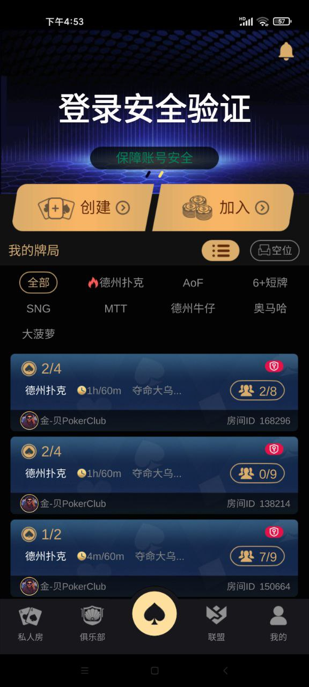
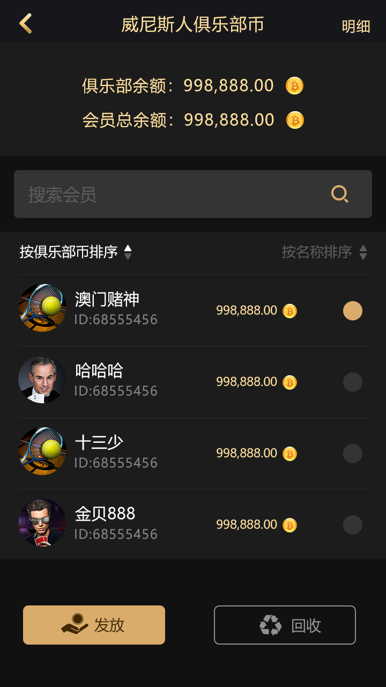
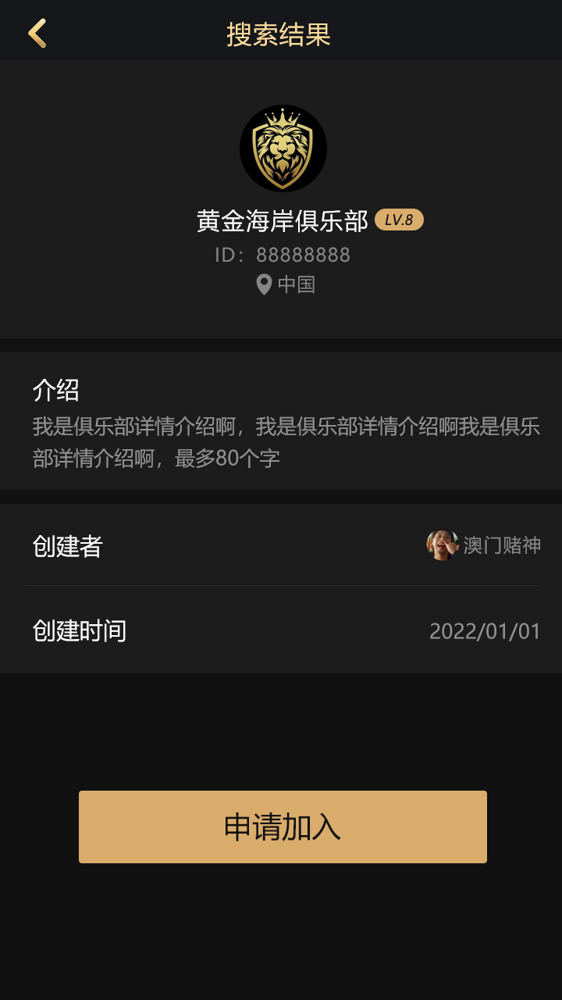
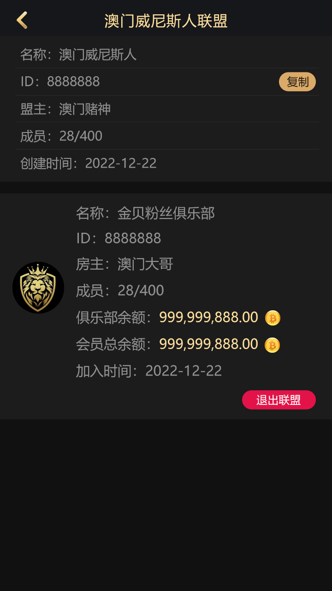
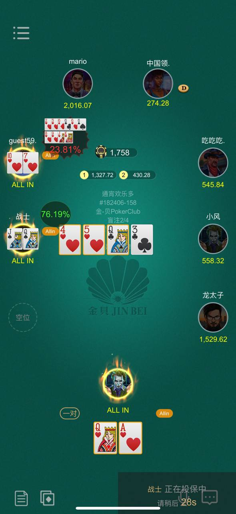
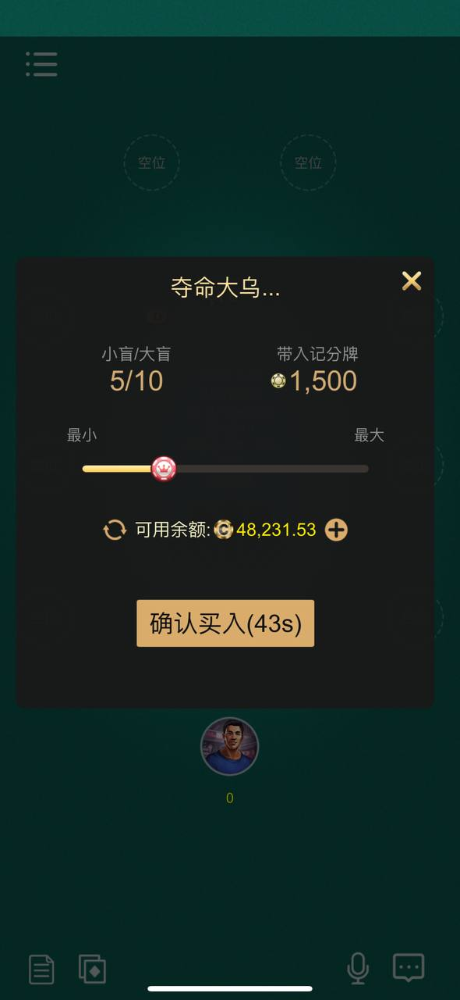

登录与连接回调
AsyncLoginCallback 处理令牌结果、连接映射、上线通知和异常断开。
TEXAS HOLD’EM · C++ · PROTOBUF
面向德州俱乐部和私人局产品研究的公开资料库，重点展示俱乐部、联盟、好友局、私人房、邀请和牌局记录相关的 C++ 回调、Protobuf 协议与真实界面。
德州俱乐部源码 · 德州私人局源码 · 德州好友局 · 俱乐部联盟 · C++ · Protobuf

01
AsyncLoginCallback 处理令牌结果、连接映射、上线通知和异常断开。
C++ 回调覆盖用户资料、在线/离线状态和用户所在房间查询。
CommonStruct.proto 定义创建、加入、审核、成员、账单与联盟管理消息。
截图和协议枚举覆盖创建房间、加入牌局、买入、结算与离桌场景。
config.proto 与公共消息定义赛事房间、盲注、报名费、奖励、排名和重购。
dz.proto、GameRecord.proto 和 Friends.proto 提供德州消息、记录与好友结构。
02
每位玩家获得两张私有牌。
翻牌、转牌和河牌依次公开五张公共牌。
各轮可根据规则过牌、跟注、加注或弃牌。
从七张可用牌中组成最强五张牌决定结果。
03
以下 12 张图片来自仓库现有资源，展示大厅、牌桌、个人中心、俱乐部、联盟、MTT、私人局和赠币界面。截图证明界面形态，具体实现仍以公开源码为准。









04
AsyncLoginCallback.* | 登录令牌回调、连接映射、用户上线通知与异常处理。 |
|---|---|
AsyncGetUserCallback.* | 用户设备、平台、渠道、区域和机器人标记回调。 |
AsyncUserServerMapCallback.* | 在线、离线及用户房间状态查询回调。 |
CommonStruct.proto | 俱乐部、联盟、赛事、私人房、金币流水与公共消息枚举。 |
config.proto | 普通房、MTT/SNG、盲注、报名费、奖励和俱乐部等级配置。 |
dz.proto / GameRecord.proto | 德州扑克消息字段与牌局记录数据结构。 |
范围说明：公开仓库只有部分 C++ 回调、头文件、Protobuf 定义、Unity 元数据和产品素材，没有完整依赖、构建脚本、数据库、服务入口、Unity 场景或后台前端。它适合作为源码与协议参考，不能仅凭这些文件认定为可直接部署的完整平台。
05
不能。当前文件缺少完整工程、依赖、数据库、配置和客户端场景。
协议中有金币与报名费字段，但没有可核验的支付渠道集成，因此不使用 payment-system 作为 Topic。
其他扑克品牌不是本仓库名称，品牌词会削弱主题准确性并增加误导风险。
GITHUB PROJECT
在 GitHub 查看实际文件和提交历史。用于正式项目之前，请审核许可证、依赖、安全、当地法规和游戏公平性要求。